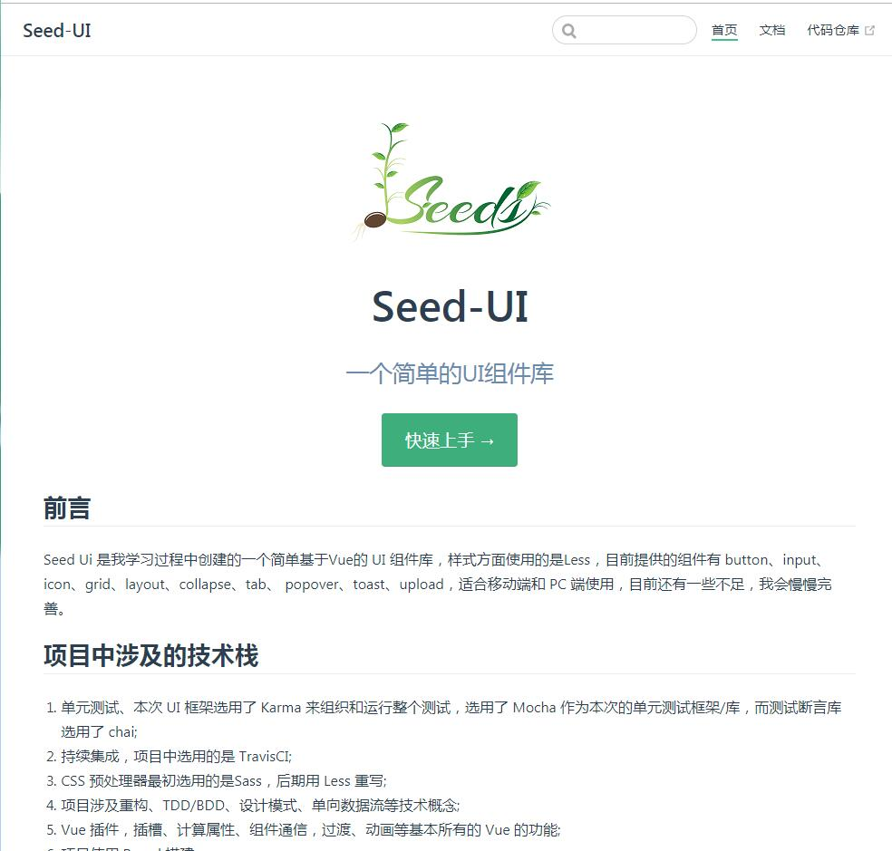

熟悉vue、Vuex、Vue Router，熟悉
element-ui、mint-ui、vant等UI框架，熟悉MVVM原理，能够独立完成相关模块或插件的开发;
理解如生命周期、组件、数据响应式等概念，能够使用 Vue 开发项目，对 React 有一定了解;
熟悉 JavaScript，熟悉其的重要知识点如：this、闭包、继承、dom 操作等;
熟悉 HTML 5 及语义化，了解 Canvas 动画制作，掌握 CSS 3
动画、过渡效果、掌握盒模型、弹性布局等常用技术;
熟悉各种前端调试工具，比如 Chrome 开发者工具，Postman，Fiddler， API 调试、HTTP 请求的工具;
使用 git 进行代码管理、yarn、npm
进行包管理、了解常用的命令行，使用命令行构建项目;
了解 HTTP 相关知识，了解常见的 Web 性能优化方案;
能够高保真还原设计稿,有良好的代码风格，通过添加注释、封装函数提高代码可读性，注重代码质量;
有小程序开发经验，能够简单封装小程序请求模块;有移动端开发经验，会使用rem、vw/ vh、响应式、媒体查询
等技术制作适配手机设备的页面;
负责pc端官网的开发与维护（vue）
h5页面的开发，使用Cordova打包为IOS和Android APP
微信小程序的创建与开发
项目介绍：
搭建一个电子书摘分享发布与线下读书会报名交流的平台，旨在为书友搭建一个分享、交流、互动的小程序平台。
项目实施：该项目基于Vant组件库构建页面，实现了微信手机号登录授权，
实现了书摘，读书会，发布，消息，我的等模块，使用腾讯开源OMIX框架做全局状态管理，
使用WebSocket以及心跳机制实现了即时通信，使用 RecorderManager和
InnerAudioContext实现了录音和语音播放，开发了发送文字，发送语音，取消发送语音，播放语音，发送图片，发送表情包等功能;
基于腾讯OCR实现了文字识别，
基于腾讯地图微信小程序JavaScript SDK实现了对用户进行定位，选择地址，逆地址解析，
在项目中对接口以及请求进行了封装，进行模块化管理，封装了常用的工具函数。
技术栈：小程序/OMIX/OCR/WebSocket/腾讯地图
项目介绍：
搭建一个用户医疗培训的直播平台，用户可以查看直播，录播进行培训，对直播进行预约，在直播中进行聊天和提问。
项目实施：
我主要负责项目的一期，该项目基于Vant组件库构建页面， 使用
Less 做 CSS 预处理。使用 Vue Router
实现路由的跳转，使用进行全局状态管理，使用axios拦截器进行请求，在项目中对拦截器进行了二次封装，对token进行处理，
对请求 loading进行处理，
处理了断网或者请求超时的情况，
处理了响应不是以 2xx 开头的情况；项目中使用脚本对部分组件进行全局注册。
实现了微信静默授权登录,游客登录，基于OBS进行推流，查看直播，录播视频及列表，使用
腾讯云超级播放器Web
进行直播和录播播放 ,
使用WebSocket以及心跳机制实现了即时通信;
使用微信JS-SDK实现微信H5分享，对微信相关API及逻辑进行抽离封装。
并实现了提问，预约等功能。
技术栈：Vue/Vue Router/WebSocket/微信JS-SDK/Less
项目介绍：
搭建一个综合型B2B2C电商平台APP系统。
项目实施：
该项目基于 Vue
实现了一个多页面移动端商城，使用Cordova打包成Android，IOS混生APP，主要包括首页商品展示，店铺推荐，商品推荐，商品搜索，活动列表表，商品详情展示，商品规格选择，购物车，订单流程，地址管理等模块。实现了点击导航跳转页面、回到顶部、上拉加载、下拉更新、搜索商品、添加购物车、增减购物车商品、地址编辑、设置默认地址、地址级联选择器等功能。以
Vue CLI 为基础创建项目模版，通过 Vue Router
实现路由的跳转、重定向，使用
实现全局状态的管理， 使用
Less 做 CSS
预处理,使用Cordova插件实现微信登录，微信支付，支付宝支付的接入。接入腾讯TIM即时通信进行商家和用户间的交流。
技术栈：Vue/Vuex/Vue Router/Less/Cordova/Vant
项目介绍：
餐饮电视叫号系统，对排号人员进行叫号。
项目实施：
该项目基于 Vue 实现了一个叫号排队系统，使用Cordova打包成Android，IOS混生APP，
使用
Cordova插件调起原生视频播放器，基于socket.io实现前后端通信，实现实时刷新当前叫号列表，上架（当贝）用加载页使用Vue
插件进行封装，实现灵活调用，
使用audio进行叫号播放。
技术栈：Vue/Vuex/Vue Router/Less/Cordova/Vant

项目介绍：该项目参考 Ant Design、Element UI 等UI框架，创建的一个基于Vue的 UI
组件库，使用 Less 作为 CSS 预处理器，目前提供的组件有
button、input、icon、grid、layout、collapse、tab、
popover、toast、upload，适合移动端和 PC 端使用，每个组件都严格遵守项目开发流程，从需求分析、UI
设计、交互设计，最后到单元测试 ，并在 TravisCI 实现持续集成，所有测试通过后发布
npm 包；
本项目中基本涉及到了Vue 所有的功能，包括插件、插槽、计算属性、Class 与 Style
绑定、条件渲染、事件处理、组件通信，过渡、动画等；
最终基于 VuePress 制作官方文档，并使用 vue-prism-component
实现了代码预览高亮；在本项目中我更深入的了解了Vue，并对组件化、单元测试有了更加深刻的认识。
技术栈：Vue/ VuePress/ ES6/ Parcel/ Npm Scripts/ Mocha/
Chai/ Mocha/ Less/ vue-prism-component/ TravisCI
预览链接：点击查看
源码链接：点击查看
2013.09-2017.06
武汉科技大学城市学院
本科
环境工程